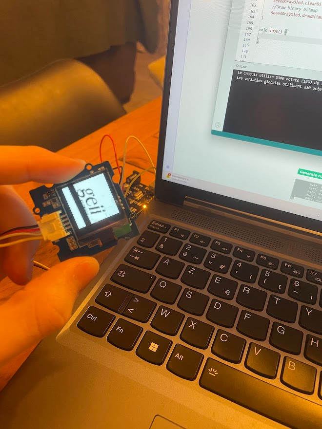
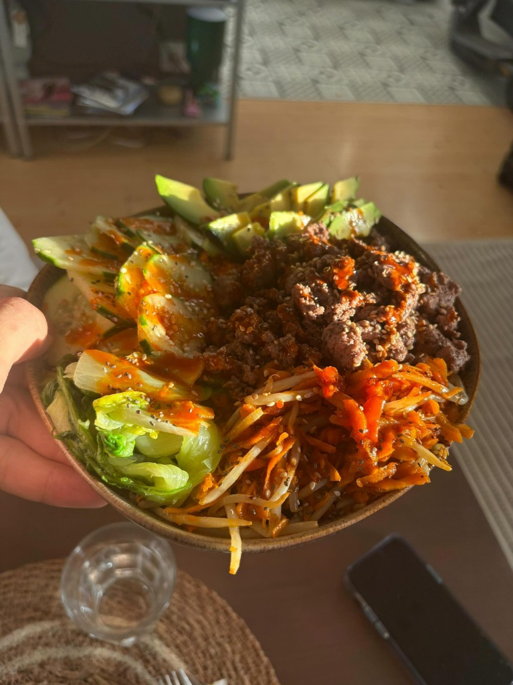

Centres d'intérêts
découvrez les domaines qui me passionnent et qui guident mon parcours technologique.

Informatique & Embarqué
Au-delà des cours, j'adore apprendre par moi-même tout ce qui touche à l'informatique et aux systèmes embarqués. En ce moment, je suis en train d'apprendre le Python. J'aime expérimenter et j'ai plusieurs projets personnels en cours, comme un petit cube connecté qui fait office de Pomodoro et de station météo. D'une manière générale, je suis très curieux et je m'intéresse à énormément de choses, ce qui me pousse toujours à tester de nouvelles idées.

Jeux vidéo
Je joue principalement sur PC, que ce soit à des jeux compétitifs, des jeux solo ou des party games avec pas mal de profondeur. Pour les jeux compétitifs comme Rocket League, j'adore la compétition, me mesurer aux autres et chercher constamment à m'améliorer pour aller toujours plus loin. Côté solo, je me tourne plutôt vers des jeux difficiles ou qui font réfléchir, avec des expériences marquantes comme Outer Wilds, Celeste, Subnautica ou de nombreux Souls-like.

Sports
Après avoir fait un an de tennis en club à Parentis-en-Born, je pratique aujourd'hui le sport en loisir. J'aime particulièrement le tennis pour sa complexité et la satisfaction de la balle qui vient taper proprement la raquette. Je joue aussi au badminton pour la vitesse du volant et l'intensité des échanges. Enfin, je fais du vélo de route, ce qui est une activité très méditative pour moi, parfaite pour réfléchir et déconnecter tout en faisant du sport.

Lecture
Je lis un peu de tout, de la lecture de journaux d'actualité jusqu'à des textes de Kafka ou des œuvres plus douces comme Le peintre du dimanche. Cela m'apporte beaucoup d'introspection, me donne des sujets sur lesquels réfléchir en profondeur, des émotions à explorer et de la matière pour nourrir mes pensées au quotidien.

Cuisine
Je ne suis pas très pâtisserie, mais j'aime cuisiner de tout, avec une préférence pour la cuisine asiatique. J'aime être rigoureux en cuisine, toujours dans l'objectif de perfectionner mes compétences et mes gestes. Pour moi, cuisiner est une façon de montrer mon affection en préparant de bons petits plats pour mes proches. C'est aussi un moment de concentration totale : quand il faut gérer deux cuissons en même temps, impossible de penser à autre chose, ce qui en fait un excellent moyen de vider mon esprit.